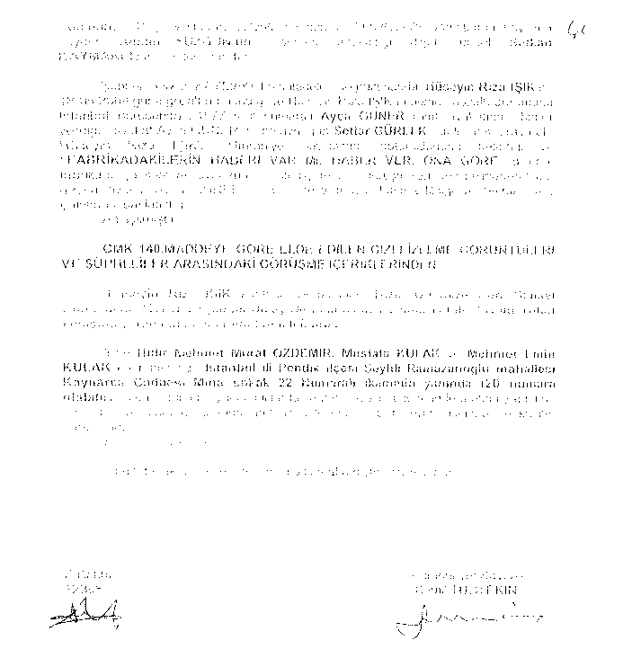

7 klasör ve binlerce telefon görüşmesini içeren CD'den oluşan bu dosyayı savcı Mehmet Berk'in bir günde (hatta dosyanın gönderilmesinde yolda geçen süre de dikkate alındığında yarım günden daha az bir sürede) inceleyerek karar alması gerekir. Ama bu kadar dokümanı incelemesine fiilen imkan yok. Bu dosya bir günde okunup karar alınmış, bu doğrultuda operasyon yapılmış gözüküyorsa, bu durum belgelerle ve vaka olarak sabitse, bununla birlikte bu olay hakkında İstanbul polisi önceden bilgi sahibi değilse, tüm bu olanlar nasıl gerçekleştirilmiş olabilir. Daha da garibi dosya Ankara Savcılığı'ndayken savcı
tarafından görevsizlik kararı verileceği önceden bilinmiyordu, kararı verilince İstanbul'da hangi savcıya düşeceği kura benzeri bir yöntemle belirlendiğinden Savcı Berke dosyanın geleceği bilinemezdi. Dolayısıyla Savcı Berk normal şartlarda hukuki olarak bu dosya hakkında, önceden bilgi sahibi değildi. Ama hiç tereddütsüz Savcı Berk bu dosya içeriğini önceden biliyordu. Dosya önüne gelmeden günlerce önce dosyayı bilen birileri savcıya yapacaklarını söylüyor ve savcı da söylenenleri yerine getiriyor. Bu durumun aklen başka bir izahı yok. Açıkça bu dosya normal yollarla. Savcı Berk'e önceden getirilmiş olamayacağına göre normal olmayan yollarla kim vermiş olabilir?
Bu tür dava dosyaları öncelikle Emniyette oluşturulur, olgunlaşınca savcıya sunulur, onun talimatı ile operasyona dönüştürülür. Demek ki bu dosya Emniyette, İstihbarat ve KOM Daire Başkanlığında oluşturulurken, günler öncesinde bu dosya veya dosyayı tutan kişiler üzerinde mutlak etkisi olan birileri dosyanın geleceğini yorumlayarak Savcı Mehmet Berk'in bilgi sahibi olmasını sağladı. Hatta bu polislerle dosya üzerinde çalıştılar, toplantılar yaptılar, dosyada şüpheli olarak adi geçmeyen Emin Bey'in dosyaya girmesi için hazırlık yaptılar. Ankara Savcısı görevsizlik kararı verip dosya İstanbul'a geldiğinde, önce bu dosyanın Savcı Berk'e düşmesini sağladılar. Sonra, savcı dosyayı açıp okumadan (zaten tüm çalışmalar yapılmıştı) önceden hazırladıkları yazıları devreye soktular.
Peki bunları kim yapabilir? Hem polis hem de savcı üzerinde kim bu kadar etkin olabilir? Adliyede dosya dağılımını yapan UYAP'a. kim etki edebilir? Hiç kimsenin bunu yapmaya muktedir olmadığım söyleyeceklere karşı iddia ediyorum ki bunların hepsini kesin olarak yapıyorlar. Bunlar yapılmadan yaşanan tüm bu gelişmeler sağlanamaz.
Bu teoriden başka mevcut durumu izah edecek başka bir teori de yok.
Ankara savcısının 2,5 yıllık araştırma ve izlemesinde Emin Bey'in ismi yokken, kim onun ismini davaya eklemiştir?
Çok daha garip bir şey daha öğrendim. Bütün basın organlarına dağıtılan Emin Beyle Habip Kanat'ın biri İstanbul Polis Evinde, diğeri İstanbul'daki bir kafede ve üçüncüsü Emniyet Genel Müdürlüğünün girişinde çekildiği iddia edilen gizli fotoğraflar dava dosyasında bulunmuyordu (hatta Emin Bey'in iddiasına göre ifadesi alınırken savcının masasındaymış, ama sonra dosyadan çıkarılmış). Çünkü bu fotoğrafların çekildiği
Peki bunun anlamı neydi? Emin Bey bu dava dosyası kapsamı dışında hukuka aykırı olarak, hiçbir karar olmadan izleniyordu. İstihbari olarak izlenemez mi? Evet izlenebilir. Zaten KOM Daire Başkam Ahmet Pek bana telefonda izlemeleri istihbaratın yaptığını, onların önceden izlendiğini söylemişti. Ama Emin Bey istihbarat Daire Başkanı dahil hepsinin üstü, bu durumda olaydan Emin Bey'in üstü olan Emniyet Genel Müdürü, ve İçişleri Bakanın haberi olması gerekir. Ben sordum, ikisi de Emin Bey ’in istihbari dinleme ve izlenmesinde kesinlikle haberlerinin olmadığını söylediler.
Başka garip bir olay daha oldu. Emin Bey, tutuklandığı gün Beşiktaş Adliyesi'nde koridorda beklerken bir kişinin elindeki anahtarlıkla gizli çekim yaptığını fark ediyor ve kaçmaya kalkan şahsı yakalıyor. Şahıs önce çaycı olduğunu söylüyor, sonra istihbarat polisi olduğu tespit ediliyor. Şahsın elinde oto anahtarlığı şeklinde gizli bir kamere olduğu anlaşılıyor. Anahtarlığın üstündeki kapak çıkarılınca içindeki cihaz oradaki üç avukat tarafından görülüyor ve bu anahtarlık oradaki savcıya teslim ediliyor. Birkaç gün sonra ziyaretime gelen bir gazeteci istihbarat polislerinden anahtarlık şeklindeki o kameranın adli tıbba giderken değiştirileceğini duyduğunu söyledi.